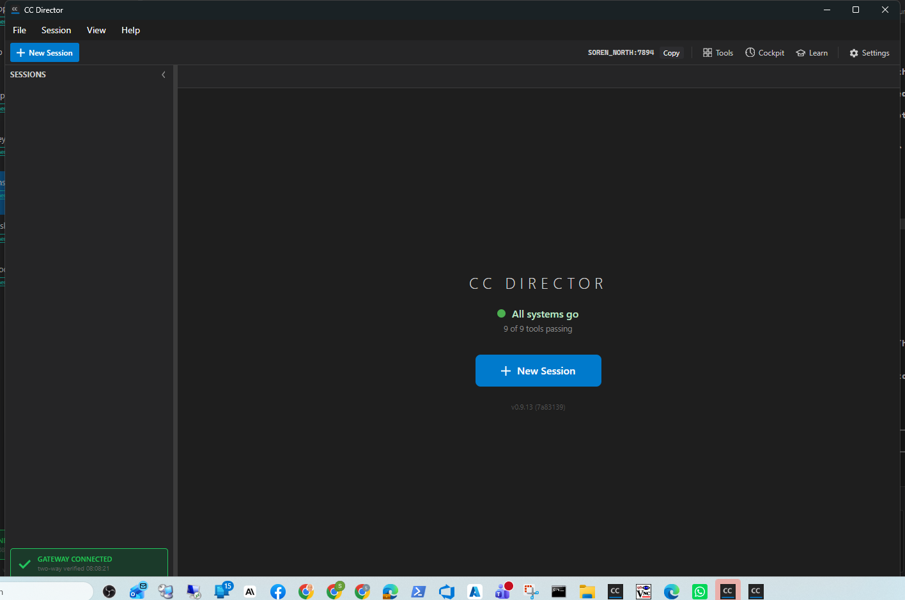
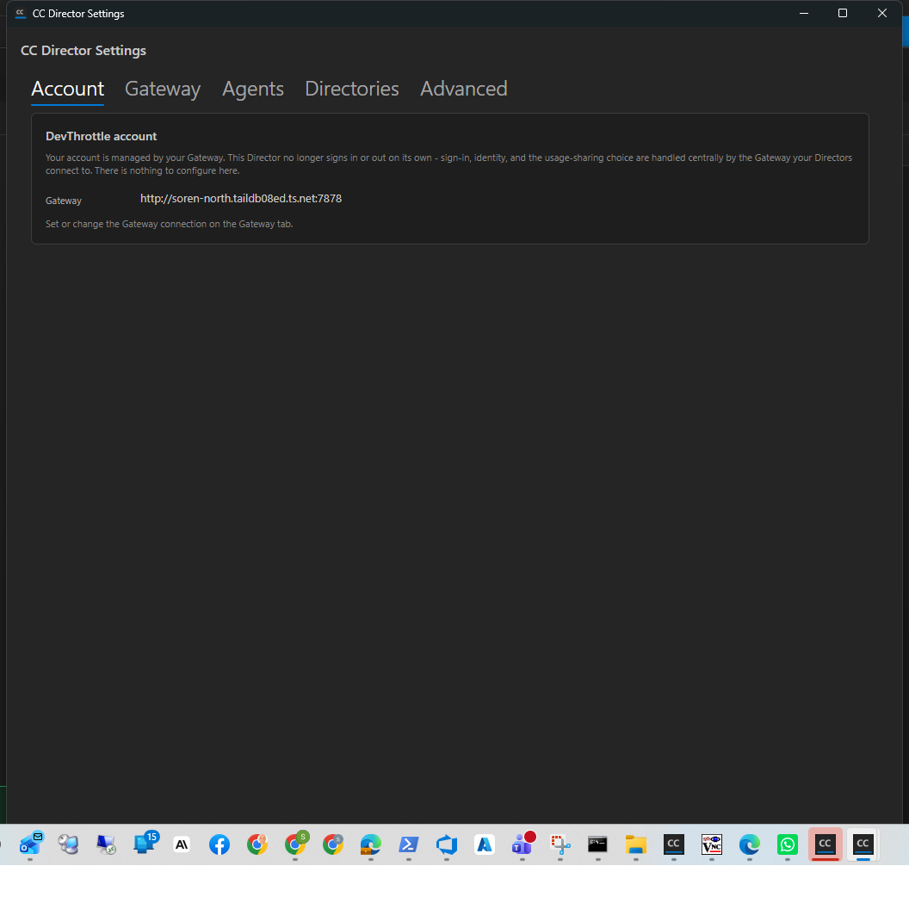

Branch: issue-664-unblock-startup-gate
Role: Developer Agent (CenCon Development Method)
Outcome: Ready for QA
The DevThrottle account is moving onto the Gateway. The Director still gated its own startup on a
local DevThrottle credential (AccountGatePolicy.Decide() returned Block when no
credential existed), and the App then showed AccountGateScreen which forced the browser
loopback sign-in before the main window opened. With that sign-in half-migrated and broken, the Director
could not start. This interim change makes the Director boot straight to the main window with no
Director-owned login gate, and replaces the Settings -> Account controls with a read-only
"managed by your Gateway" panel.
src/CcDirector.Core/Account/AccountGatePolicy.cs - Decide() now always returns
GateDecision.Start. A missing or unusable local credential decides Start, not Block. The
cached logged-in check is still read and logged for diagnostics but never blocks the window. The
Block value and the method are kept in place for the sequenced epics (#641 Gateway-verified
gate, #651 full removal).src/CcDirector.Avalonia/App.axaml.cs - removed the startup Block branch that
showed AccountGateScreen and forced the browser loopback sign-in; the App now always shows
the main window. Removed the first-run consent step from the startup path
(ShowFirstRunConsentIfNeeded / FirstRunConsentDialog are no longer invoked at
startup), so nothing blocks the main window.src/CcDirector.Avalonia/SettingsDialog.axaml + .axaml.cs - the Account tab's
sign-in identity card, Log out button, account status line, and usage-telemetry toggle are replaced by
a single static read-only card: "Your account is managed by your Gateway", showing the configured
Gateway URL from config.json (or "Not configured"). No control invokes the broken
sign-in / logout / consent flow. It does NOT call /account/status (#638, not built yet).src/CcDirector.Core.Tests/Account/AccountGatePolicyTests.cs - the missing-credential and
tampered-credential tests now assert Start (renamed to
Decide_NoStoredCredential_ReturnsStart and Decide_TamperedCredential_ReturnsStart).
The valid/expired Start tests and the background-validation tests are unchanged.Underlying account/credential types (AccountGateScreen,
FirstRunConsentDialog, FirstRunLoginCoordinator, LoopbackLoginListener,
the credential service) are left present and compiling but are no longer a startup gate. Their full deletion
is the later issue #651, per the issue's scope (prefer neutralizing over mass-deletion).
| # | Criterion | Expected | Actual | Status |
|---|---|---|---|---|
| 1 | A Director with NO local DevThrottle credential boots to the MAIN WINDOW with no sign-in prompt and opens no browser sign-in. | Main window shown; no gate screen; no browser sign-in. | Launched slot-14 Director with the credential blob absent (devthrottle-credential.bin does not exist). Log: loggedIn=False, decision=Start then Main window shown. Screenshot shows the "CC DIRECTOR / All systems go / New Session" main window. No AccountGateScreen, no Startup blocked line. |
PASS |
| 2 | No startup path opens a devthrottle.com browser sign-in, and the first-run consent dialog does not block startup. | No loopback sign-in; no consent dialog at startup. | Block branch removed (gate screen unreachable at startup); ShowMainWindow no longer calls the consent step. Director log for a clean launch contains no FirstRunConsent, no loopback, no sign-in lines. |
PASS |
| 3 | Settings -> Account shows a read-only "managed by your Gateway" panel with no controls invoking the broken flow. | Static read-only card with the configured gateway URL. | Screenshot of the Account tab shows the read-only card "Your account is managed by your Gateway ... There is nothing to configure here." with the configured Gateway URL and no sign-in/identity/logout/telemetry controls. | PASS |
| 4 | dotnet build cc-director.sln is clean (no dead-reference warnings). |
Build succeeded, 0 warnings, 0 errors. | See build-clean.log: Build succeeded. 0 Warning(s) 0 Error(s). |
PASS |
| 5 | Account/gate tests updated: a missing-credential install decides Start not Block; existing suites pass. | Updated tests pass; full Account and Core suites green. | See tests-passing.log: Account suite 83/83 passed. Full Core suite 2320 passed / 6 skipped (environment-gated). Avalonia suite 82/82 passed. |
PASS |
Main window reached with no local credential and no sign-in prompt:

Settings -> Account read-only "managed by your Gateway" panel:

[WindowsProtectedTokenStore] Load: blobPath=...\devthrottle-credential.bin, exists=False [AccountGatePolicy] Decide: loggedIn=False, decision=Start (interim: local credential no longer gates startup, issue #664) [CcDirector] Account startup gate decided Start (interim: local credential no longer gates startup, issue #664); showing the main window [CcDirector] Main window shown; starting background session validation next
This change narrows the startup behaviour (removes a Director-owned gate) but does not add new
architecture and does not weaken any security posture: credential storage is unchanged, telemetry Bearer
handling is untouched (that is #642), and no account types are deleted (that is #651). No
docs/cencon/ architecture or security drift. No blocking security rule (DT-xx) is affected.
All five acceptance criteria are met with proof above. I believe this is finished.